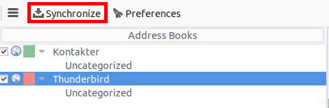

Синхронізація з Thunderbird
Thunderbird <https://www.thunderbird.net> - багатофункціональний і зрілий поштовий клієнт, який можна перетворити на повноцінний менеджер персональної інформації (PIM). Починаючи з версії 102, він підтримує синхронізацію адресних книг через CardDAV та автоматичне виявлення календарів і адресних книг, доступних на сервері.
Рекомендований метод
Починаючи з Thunderbird 102, протоколи CardDAV та CalDAV підтримуються вбудовано.
Контакти
У вікні адресної книги натисніть стрілку вниз біля Нова адресна книга і виберіть Додати адресну книгу CardDAV.
У наступному вікні введіть ваше Ім’я користувача та Місцезнаходження (URL-адресу сервера).
У наступному вікні вам буде запропоновано ввести ім’я користувача та пароль для цього облікового запису.
Попереднє вікно оновиться і запитає вас, які адресні книги ви бажаєте синхронізувати.
Виберіть і натисніть Продовжити.
Якщо пізніше ви захочете додати нову адресну книгу, ви можете повторити всі ці кроки, і вам буде запропоновано лише ті книги, які ще не синхронізовано.
Примітка
Якщо ваш обліковий запис використовує двофакторну автентифікацію, вам потрібен пароль виділеного додатка для входу, а не ваш звичайний пароль.
Календарі
Перейдіть до перегляду календаря в Thunderbird і натисніть кнопку Новий календар… внизу лівої бічної панелі.
Виберіть У мережі:

Введіть своє Ім’я користувача та Місцезнаходження (URL-адресу сервера), а потім натисніть на Знайти календарі.
Виберіть, які календарі ви хочете додати, і натисніть Підписатись.
Те ж саме тут, якщо пізніше ви захочете додати більше календарів, просто повторіть процедуру.
Альтернатива: Використання доповнення CardBook (тільки для контактів)
`CardBook <https://addons.thunderbird.net/en/thunderbird/addon/cardbook/>`_ - це розширена альтернатива адресній книзі Thunderbird, яка підтримує CardDAV.
Клацніть піктограму CardBook у верхньому правому куті Thunderbird:

У CardBook:
Перейдіть до Адресна книга > Нова адресна книга Віддалена > Далі
Виберіть CardDAV, введіть адресу вашого сервера Nextcloud, ім’я користувача та пароль

Натисніть «Підтвердити», натисніть «Далі», потім виберіть назву адресної книги і знову натисніть «Далі»:

Після завершення роботи CardBook синхронізує ваші адресні книги. Ви завжди можете запустити синхронізацію вручну, натиснувши «Синхронізувати» у верхньому лівому кутку CardBook:
